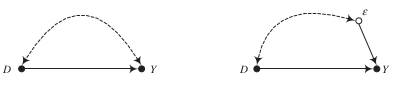
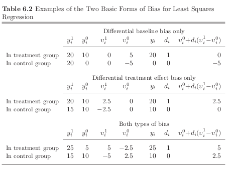

Download the notebook here!
Interactive online version: 
Regression estimators of causal effects¶
Overview
Regression as a descriptive tool
Regression adjustment as a strategy to to estimate causal effects
Regression as conditional-variance-weighted matching
Regression as an implementation of a perfect stratification
Regression as supplemental adjustment when matching
Extensions and other perspectives
Conclusion
We start with different ways of using regression
descriptive tools
Anscombe quartet
estimating causal effects
Freedman’s paradox
Regression as a descriptive tool¶
Goldberger (1991) motivates least squares regression as a technique to estimate a best-fitting linear approximation to a conditional expectation function that may be nonlinear in the population.
Best is defined as minimizing the average squared differences between the fitted values and the true values of the conditional expectations functions.

[18]:
df = get_sample_demonstration_1(num_agents=10000)
df.head()
[18]:
| Y | D | S | Y_1 | Y_0 | |
|---|---|---|---|---|---|
| 0 | 0.113157 | 0 | 1 | 4.055376 | 0.113157 |
| 1 | 9.479227 | 0 | 3 | 14.146062 | 9.479227 |
| 2 | 0.409400 | 0 | 1 | 2.081023 | 0.409400 |
| 3 | 7.087262 | 1 | 2 | 7.087262 | 5.145585 |
| 4 | 3.338352 | 0 | 1 | 2.825938 | 3.338352 |
[19]:
df.groupby(["D", "S"])["Y"].mean()
[19]:
D S
0 1 2.014537
2 6.032069
3 9.976885
1 1 4.067050
2 8.028103
3 14.025534
Name: Y, dtype: float64
How does the functional form of the conditional expectation look like?
[20]:
plot_conditional_expectation_demonstration_1(df)

What does the difference between the two lines tell us about treatment effect heterogeneity?
We will fit four different prediction models using ordinary least squares.
\begin{align*} &\hat{Y} = \beta_0 + \beta_1 D + \beta_2 S \\ &\hat{Y} = \beta_0 + \beta_1 D + \beta_2 S_1 + \beta_3 S_2 \\ &\hat{Y} = \beta_0 + \beta_1 D + \beta_2 S_1 + \beta_3 S_2 + \beta_4 S_1 * D + \beta_5 S_2 * D \end{align*}
[21]:
rslt = smf.ols(formula="Y ~ D + S", data=df).fit()
rslt.summary()
[21]:
| Dep. Variable: | Y | R-squared: | 0.941 |
|---|---|---|---|
| Model: | OLS | Adj. R-squared: | 0.941 |
| Method: | Least Squares | F-statistic: | 8.018e+04 |
| Date: | Tue, 26 May 2020 | Prob (F-statistic): | 0.00 |
| Time: | 07:30:39 | Log-Likelihood: | -15339. |
| No. Observations: | 10000 | AIC: | 3.068e+04 |
| Df Residuals: | 9997 | BIC: | 3.071e+04 |
| Df Model: | 2 | ||
| Covariance Type: | nonrobust |
| coef | std err | t | P>|t| | [0.025 | 0.975] | |
|---|---|---|---|---|---|---|
| Intercept | -2.6594 | 0.027 | -98.877 | 0.000 | -2.712 | -2.607 |
| D | 2.7202 | 0.025 | 108.756 | 0.000 | 2.671 | 2.769 |
| S | 4.4181 | 0.014 | 311.459 | 0.000 | 4.390 | 4.446 |
| Omnibus: | 1.627 | Durbin-Watson: | 2.023 |
|---|---|---|---|
| Prob(Omnibus): | 0.443 | Jarque-Bera (JB): | 1.637 |
| Skew: | 0.016 | Prob(JB): | 0.441 |
| Kurtosis: | 2.946 | Cond. No. | 6.15 |
Warnings:
[1] Standard Errors assume that the covariance matrix of the errors is correctly specified.
[22]:
df["predict"] = rslt.predict()
df.groupby(["D", "S"])[["Y", "predict"]].mean()
[22]:
| Y | predict | ||
|---|---|---|---|
| D | S | ||
| 0 | 1 | 2.014537 | 1.758657 |
| 2 | 6.032069 | 6.176733 | |
| 3 | 9.976885 | 10.594808 | |
| 1 | 1 | 4.067050 | 4.478865 |
| 2 | 8.028103 | 8.896941 | |
| 3 | 14.025534 | 13.315017 |
[23]:
plot_predictions_demonstration_1(df)

Anscombe quartet¶
The best linear approximation can be the same for very different functions. The Anscombe quartet (Anscombe, 1973) and many other useful datasets are available in statsmodels as part of the Datasets Package.
[30]:
df1, df2, df3, df4 = get_anscombe_datasets()
for i, df in enumerate([df1, df2, df3, df4]):
rslt = smf.ols(formula="y ~ x", data=df).fit()
print(f"\n Dataset {i}")
print(" Intercept: {:5.3f} x: {:5.3f}".format(*rslt.params))
Dataset 0
Intercept: 3.000 x: 0.500
Dataset 1
Intercept: 3.001 x: 0.500
Dataset 2
Intercept: 3.002 x: 0.500
Dataset 3
Intercept: 3.002 x: 0.500
So what does the data behind these regressions look like?
[31]:
plot_anscombe_dataset()

Regression adjustment as a strategy to estimate causal effects¶
Regression models and omitted-variable bias¶
\begin{align*} Y = \alpha + \delta D + \epsilon \end{align*}
\(\delta\) is interpreted as an invariant, structural causal effect that applies to all members of the population.
\(\epsilon\) is a summary random variable that represents all other causes of \(Y\).
\begin{align*} \hat{\delta}_{OLS, \text{bivariate}} = \frac{Cov_N(y_i, d_i)}{Var_N(d_i)} \end{align*}
It now depends on the correlation between \(\epsilon\) and \(D\) whether \(\hat{\delta}\) provides an unbiased and consistent estimate of the true causal effect

We now move to the potential outcomes model to clarify the connection between omitted-variable bias and self-selection bias.
Potential outcomes and omitted-variable bias¶
\begin{align*} Y = \underbrace{\mu^0}_{\alpha} + \underbrace{(\mu^1 - \mu^0)}_{\delta} D + \underbrace{\{\nu^0 + D(\nu^1 - \nu^0 )\}}_{\epsilon}, \end{align*}
where \(\mu^0\equiv E[Y^0]\), \(\mu^1\equiv E[Y^1]\), \(\nu^0\equiv Y^0 - E[Y^0]\), and \(\nu^1\equiv Y^1 - E[Y^1]\).
What induces a correlation between \(D\) an \(\{\nu^0 + D(\nu^1 - \nu^0 )\}\)?
baseline bias, there is a net baseline difference in the hypothetical no-treatment state that is correlated with treatment uptake \(\rightarrow\) \(D\) is correlated with \(\nu_0\)
differential treatment bias, there is a net treatment effect difference that is correlated with treatment uptake \(\rightarrow\) \(D\) is correlated with \(D(\nu^1 - \nu^0 )\)

Errata
Please note that there is a relevant correction on the author’s website:
page 198, Table 6.2, first panel: In order to restrict the bias to differential baseline bias only, as required by the label on the first panel of the table, replace 20 with 10 in the first cell of the second row.Then, carry the changes across columns so that (a) the values for \(\nu^1_i\) are 5 for the individual in the treatment group and -5 for the individual in the control group and (b) the value for \({\nu^0_i + D(\nu^1_i − \nu^0_i)}\) is 5 for the individual in the treatment group
Group |
\(y_i^1\) |
\(y_i^0\) |
\(\nu_i^1\) |
\(\nu_i^0\) |
\(y_i\) |
\(d_i\) |
\(\nu_i^1 + d_i (\nu_i^1 - \nu_i^0)\) |
$ d_i (\nu_i^1 - \nu_i^0)$ |
|---|---|---|---|---|---|---|---|---|
Treated |
20 |
10 |
5 |
5 |
20 |
1 |
5.000000000000000000000000 |
0.000000000 |
Control |
10 |
0 |
-5 |
-5 |
0 |
0 |
-5 |
0.000000000 |
Regression as adjustment for otherwise omitted variables¶

We first want to illustrate how we can subtract out the dependence between \(D\) and \(Y\) induced by their common determinant \(X\). Let’s quickly simulate a parameterized example:
\begin{align*} D & = I[X + \eta > 0] \\ Y & = D + X + \epsilon, \end{align*} where \((\eta, \epsilon)\) follow a standard normal distribution.
[118]:
df = get_quick_sample(num_samples=1000)
We now first run a complete regression.
[122]:
stat = smf.ols(formula="Y ~ D + X", data=df).fit().params[1]
print(f"Estimated effect: {stat:5.3f}")
Estimated effect: 0.924
However, as it turns out, we can also get the identical estimate by first partialling out the effect of \(X\) on \(D\) as well as \(Y\).
[127]:
df_resid = pd.DataFrame(columns=["Y_resid", "D_resid"])
for label in ["Y", "D"]:
column, formula = f"{label}_resid", f"{label} ~ X"
df_resid.loc[:, column] = smf.ols(formula=formula, data=df).fit().resid
smf.ols(formula="Y_resid ~ D_resid", data=df_resid).fit().params[1]
print(f"Estimated effect: {stat:5.3f}")
Estimated effect: 0.924
We will now look at two datasets that are observationally equivalent but regression adjustment for observable \(X\) does only work in one of them.

Note
The naive estimates will be identical as the observed values \(y_i\) and \(d_i\) are the same.
[40]:
for sample in range(2):
df = get_sample_regression_adjustment(sample)
print("Sample {:}\n".format(sample))
stat = (df["Y_1"] - df["Y_0"]).mean()
print("True effect: {:5.4f}".format(stat))
stat = df.query("D == 1")["Y"].mean() - df.query("D == 0")["Y"].mean()
print("Naive estimate: {:5.4f}".format(stat))
rslt = smf.ols(formula="Y ~ D", data=df).fit()
print(rslt.summary())
Sample 0
True effect: 10.0000
Naive estimate: 11.6540
OLS Regression Results
==============================================================================
Dep. Variable: Y R-squared: 0.860
Model: OLS Adj. R-squared: 0.860
Method: Least Squares F-statistic: 6113.
Date: Tue, 26 May 2020 Prob (F-statistic): 0.00
Time: 11:44:40 Log-Likelihood: -2275.1
No. Observations: 1000 AIC: 4554.
Df Residuals: 998 BIC: 4564.
Df Model: 1
Covariance Type: nonrobust
==============================================================================
coef std err t P>|t| [0.025 0.975]
------------------------------------------------------------------------------
Intercept 6.8379 0.105 65.272 0.000 6.632 7.044
D 11.6540 0.149 78.187 0.000 11.361 11.946
==============================================================================
Omnibus: 7278.240 Durbin-Watson: 1.966
Prob(Omnibus): 0.000 Jarque-Bera (JB): 94.873
Skew: -0.097 Prob(JB): 2.50e-21
Kurtosis: 1.504 Cond. No. 2.60
==============================================================================
Warnings:
[1] Standard Errors assume that the covariance matrix of the errors is correctly specified.
Sample 1
True effect: 9.6280
Naive estimate: 11.6540
OLS Regression Results
==============================================================================
Dep. Variable: Y R-squared: 0.860
Model: OLS Adj. R-squared: 0.860
Method: Least Squares F-statistic: 6113.
Date: Tue, 26 May 2020 Prob (F-statistic): 0.00
Time: 11:44:42 Log-Likelihood: -2275.1
No. Observations: 1000 AIC: 4554.
Df Residuals: 998 BIC: 4564.
Df Model: 1
Covariance Type: nonrobust
==============================================================================
coef std err t P>|t| [0.025 0.975]
------------------------------------------------------------------------------
Intercept 6.8379 0.105 65.272 0.000 6.632 7.044
D 11.6540 0.149 78.187 0.000 11.361 11.946
==============================================================================
Omnibus: 7278.240 Durbin-Watson: 1.966
Prob(Omnibus): 0.000 Jarque-Bera (JB): 94.873
Skew: -0.097 Prob(JB): 2.50e-21
Kurtosis: 1.504 Cond. No. 2.60
==============================================================================
Warnings:
[1] Standard Errors assume that the covariance matrix of the errors is correctly specified.
Now we condition on \(X\) to see where conditioning might help in obtaining an unbiased estimate of the true effect. Note that the treatment effect \((y^1_i - y^0_i)\) is uncorrelated with \(d_i\) within each strata of \(X\) in the first example. That is not true in the second example.

[39]:
for sample in range(2):
df = get_sample_regression_adjustment(sample)
print("Sample {:}\n".format(sample))
stat = (df["Y_1"] - df["Y_0"]).mean()
print(f"True effect:{stat:24.4f}")
stat = df.query("D == 1")["Y"].mean() - df.query("D == 0")["Y"].mean()
print(f"Naive estimate:{stat:21.4f}")
rslt = smf.ols(formula="Y ~ D + X", data=df).fit()
print(f"Conditional estimate:{rslt.params[1]:15.4f}\n")
Sample 0
True effect: 10.0000
Naive estimate: 11.6540
Conditional estimate: 10.0000
Sample 1
True effect: 9.6280
Naive estimate: 11.6540
Conditional estimate: 10.0000
To summarize: Regression adjustment by \(X\) will yield a consistent and unbiased estimate of the ATE when:
\(D\) is mean independent of (and therefore uncorrelated with) \(v^0 + D(v^1 - v^0)\) for each subset of respondent identified by distinct values on the variables in \(X\)
the causal effect of \(D\) does not vary with \(X\)
a fully flexible parameterization of \(X\) is used
Freedman’s paradox¶
Let’s explore some of the challenges of finding the right regression specification.
In statistical analysis, Freedman’s paradox (Freedman, 1983), named after David Freedman, is a problem in model selection whereby predictor variables with no relationship to the dependent variable can pass tests of significance – both individually via a t-test, and jointly via an F-test for the significance of the regression. (Wikipedia)
We fill a dataframe with random numbers. Thus there is no causal relationship between the dependent and independent variables.
[33]:
columns = ["Y"]
[columns.append("X{:}".format(i)) for i in range(50)]
df = pd.DataFrame(np.random.normal(size=(100, 51)), columns=columns)
Now we run a simple regression of the random independent variables on the dependent variable.
[34]:
formula = "Y ~ " + " + ".join(columns[1:])
rslt = smf.ols(formula=formula, data=df).fit()
rslt.summary()
[34]:
| Dep. Variable: | Y | R-squared: | 0.545 |
|---|---|---|---|
| Model: | OLS | Adj. R-squared: | 0.081 |
| Method: | Least Squares | F-statistic: | 1.176 |
| Date: | Tue, 26 May 2020 | Prob (F-statistic): | 0.286 |
| Time: | 11:32:24 | Log-Likelihood: | -108.43 |
| No. Observations: | 100 | AIC: | 318.9 |
| Df Residuals: | 49 | BIC: | 451.7 |
| Df Model: | 50 | ||
| Covariance Type: | nonrobust |
| coef | std err | t | P>|t| | [0.025 | 0.975] | |
|---|---|---|---|---|---|---|
| Intercept | 0.1106 | 0.136 | 0.811 | 0.421 | -0.163 | 0.384 |
| X0 | -0.0922 | 0.222 | -0.416 | 0.679 | -0.538 | 0.353 |
| X1 | -0.1713 | 0.141 | -1.217 | 0.229 | -0.454 | 0.111 |
| X2 | -0.0741 | 0.155 | -0.478 | 0.635 | -0.386 | 0.237 |
| X3 | 0.1575 | 0.134 | 1.178 | 0.244 | -0.111 | 0.426 |
| X4 | 0.2736 | 0.172 | 1.595 | 0.117 | -0.071 | 0.618 |
| X5 | -0.0649 | 0.172 | -0.378 | 0.707 | -0.410 | 0.280 |
| X6 | 0.0063 | 0.141 | 0.045 | 0.964 | -0.276 | 0.289 |
| X7 | 0.1089 | 0.141 | 0.774 | 0.443 | -0.174 | 0.392 |
| X8 | 0.0694 | 0.139 | 0.500 | 0.619 | -0.210 | 0.348 |
| X9 | 0.3075 | 0.149 | 2.059 | 0.045 | 0.007 | 0.608 |
| X10 | 0.0189 | 0.168 | 0.113 | 0.911 | -0.318 | 0.356 |
| X11 | -0.2898 | 0.178 | -1.626 | 0.110 | -0.648 | 0.068 |
| X12 | 0.0207 | 0.129 | 0.160 | 0.873 | -0.239 | 0.280 |
| X13 | 0.0901 | 0.119 | 0.757 | 0.453 | -0.149 | 0.329 |
| X14 | -0.1296 | 0.154 | -0.843 | 0.403 | -0.439 | 0.179 |
| X15 | 0.0618 | 0.153 | 0.405 | 0.687 | -0.245 | 0.368 |
| X16 | -0.1151 | 0.122 | -0.944 | 0.350 | -0.360 | 0.130 |
| X17 | 0.1265 | 0.170 | 0.744 | 0.460 | -0.215 | 0.468 |
| X18 | 0.1578 | 0.140 | 1.129 | 0.264 | -0.123 | 0.439 |
| X19 | -0.0752 | 0.157 | -0.477 | 0.635 | -0.392 | 0.241 |
| X20 | -0.1454 | 0.133 | -1.097 | 0.278 | -0.412 | 0.121 |
| X21 | 0.1507 | 0.150 | 1.005 | 0.320 | -0.151 | 0.452 |
| X22 | 0.4160 | 0.133 | 3.123 | 0.003 | 0.148 | 0.684 |
| X23 | -0.1169 | 0.156 | -0.750 | 0.457 | -0.430 | 0.196 |
| X24 | -0.2271 | 0.165 | -1.376 | 0.175 | -0.559 | 0.104 |
| X25 | 0.1651 | 0.172 | 0.962 | 0.341 | -0.180 | 0.510 |
| X26 | 0.1461 | 0.123 | 1.192 | 0.239 | -0.100 | 0.392 |
| X27 | -0.2343 | 0.139 | -1.685 | 0.098 | -0.514 | 0.045 |
| X28 | 0.0508 | 0.138 | 0.368 | 0.715 | -0.227 | 0.329 |
| X29 | -0.0187 | 0.191 | -0.098 | 0.922 | -0.403 | 0.365 |
| X30 | 0.2245 | 0.149 | 1.511 | 0.137 | -0.074 | 0.523 |
| X31 | 0.0353 | 0.146 | 0.242 | 0.810 | -0.258 | 0.329 |
| X32 | 0.0666 | 0.152 | 0.438 | 0.663 | -0.239 | 0.372 |
| X33 | -0.0281 | 0.151 | -0.186 | 0.853 | -0.331 | 0.275 |
| X34 | 0.0204 | 0.141 | 0.144 | 0.886 | -0.263 | 0.304 |
| X35 | -0.1940 | 0.138 | -1.409 | 0.165 | -0.471 | 0.083 |
| X36 | 0.1215 | 0.144 | 0.843 | 0.403 | -0.168 | 0.411 |
| X37 | 0.3450 | 0.171 | 2.023 | 0.049 | 0.002 | 0.688 |
| X38 | 0.2652 | 0.148 | 1.787 | 0.080 | -0.033 | 0.563 |
| X39 | 0.0370 | 0.167 | 0.221 | 0.826 | -0.299 | 0.373 |
| X40 | -0.0072 | 0.147 | -0.049 | 0.961 | -0.302 | 0.288 |
| X41 | 0.2258 | 0.154 | 1.469 | 0.148 | -0.083 | 0.535 |
| X42 | -0.1910 | 0.154 | -1.242 | 0.220 | -0.500 | 0.118 |
| X43 | 0.1973 | 0.139 | 1.423 | 0.161 | -0.081 | 0.476 |
| X44 | -0.1017 | 0.136 | -0.750 | 0.457 | -0.374 | 0.171 |
| X45 | -0.1656 | 0.137 | -1.210 | 0.232 | -0.441 | 0.109 |
| X46 | -0.0255 | 0.152 | -0.168 | 0.867 | -0.330 | 0.279 |
| X47 | 0.1621 | 0.148 | 1.094 | 0.279 | -0.136 | 0.460 |
| X48 | 0.1768 | 0.144 | 1.228 | 0.225 | -0.113 | 0.466 |
| X49 | 0.1961 | 0.146 | 1.345 | 0.185 | -0.097 | 0.489 |
| Omnibus: | 0.122 | Durbin-Watson: | 2.167 |
|---|---|---|---|
| Prob(Omnibus): | 0.941 | Jarque-Bera (JB): | 0.302 |
| Skew: | -0.007 | Prob(JB): | 0.860 |
| Kurtosis: | 2.731 | Cond. No. | 6.59 |
Warnings:
[1] Standard Errors assume that the covariance matrix of the errors is correctly specified.
We use this to inform a second regression where we only keep the variables that were significant at the 25% level.
[14]:
final_covariates = list()
for label in rslt.params.keys():
if rslt.pvalues[label] > 0.25:
continue
final_covariates.append(label)
formula = "Y ~ " + " + ".join(final_covariates)
rslt = smf.ols(formula=formula, data=df).fit()
rslt.summary()
[14]:
| Dep. Variable: | Y | R-squared: | 0.402 |
|---|---|---|---|
| Model: | OLS | Adj. R-squared: | 0.260 |
| Method: | Least Squares | F-statistic: | 2.834 |
| Date: | Tue, 26 May 2020 | Prob (F-statistic): | 0.000627 |
| Time: | 07:19:03 | Log-Likelihood: | -122.11 |
| No. Observations: | 100 | AIC: | 284.2 |
| Df Residuals: | 80 | BIC: | 336.3 |
| Df Model: | 19 | ||
| Covariance Type: | nonrobust |
| coef | std err | t | P>|t| | [0.025 | 0.975] | |
|---|---|---|---|---|---|---|
| Intercept | 0.0853 | 0.103 | 0.832 | 0.408 | -0.119 | 0.289 |
| X1 | -0.0874 | 0.099 | -0.879 | 0.382 | -0.285 | 0.111 |
| X3 | 0.1712 | 0.101 | 1.698 | 0.093 | -0.029 | 0.372 |
| X4 | 0.1905 | 0.111 | 1.710 | 0.091 | -0.031 | 0.412 |
| X9 | 0.2888 | 0.104 | 2.768 | 0.007 | 0.081 | 0.496 |
| X11 | -0.2161 | 0.119 | -1.812 | 0.074 | -0.453 | 0.021 |
| X22 | 0.3742 | 0.100 | 3.735 | 0.000 | 0.175 | 0.574 |
| X24 | -0.2796 | 0.103 | -2.716 | 0.008 | -0.484 | -0.075 |
| X26 | 0.1391 | 0.094 | 1.484 | 0.142 | -0.047 | 0.326 |
| X27 | -0.2348 | 0.103 | -2.283 | 0.025 | -0.439 | -0.030 |
| X30 | 0.1220 | 0.110 | 1.109 | 0.271 | -0.097 | 0.341 |
| X35 | -0.1628 | 0.093 | -1.742 | 0.085 | -0.349 | 0.023 |
| X37 | 0.2214 | 0.100 | 2.206 | 0.030 | 0.022 | 0.421 |
| X38 | 0.2400 | 0.106 | 2.267 | 0.026 | 0.029 | 0.451 |
| X41 | 0.0482 | 0.102 | 0.471 | 0.639 | -0.155 | 0.252 |
| X42 | -0.1669 | 0.113 | -1.478 | 0.143 | -0.392 | 0.058 |
| X43 | 0.1723 | 0.096 | 1.786 | 0.078 | -0.020 | 0.364 |
| X45 | -0.1853 | 0.101 | -1.838 | 0.070 | -0.386 | 0.015 |
| X48 | 0.1667 | 0.092 | 1.811 | 0.074 | -0.016 | 0.350 |
| X49 | 0.1491 | 0.100 | 1.492 | 0.140 | -0.050 | 0.348 |
| Omnibus: | 2.282 | Durbin-Watson: | 2.259 |
|---|---|---|---|
| Prob(Omnibus): | 0.319 | Jarque-Bera (JB): | 1.718 |
| Skew: | 0.137 | Prob(JB): | 0.424 |
| Kurtosis: | 2.420 | Cond. No. | 2.43 |
Warnings:
[1] Standard Errors assume that the covariance matrix of the errors is correctly specified.
What to make of this exercise?
[15]:
np.random.seed(213)
df = pd.DataFrame(columns=["F-statistic", "Regressors"])
for i in range(100):
model = run_freedman_exercise()
df["Regressors"].loc[i] = len(model.params)
df["F-statistic"].loc[i] = model.f_pvalue
[16]:
plot_freedman_exercise(df)
Resources¶
Goldberger, A. S. (1991). A course in econometrics. Cambridge, MA: Harvard University Press.
F. J. Anscombe (1973). Graphs in Statistical Analysis. The American Statistician, 27, 17–21.
Freedman, David A.; Freedman, David A. (1983). A Note on Screening Regression Equations. The American Statistician. 37 (2), 152–155.